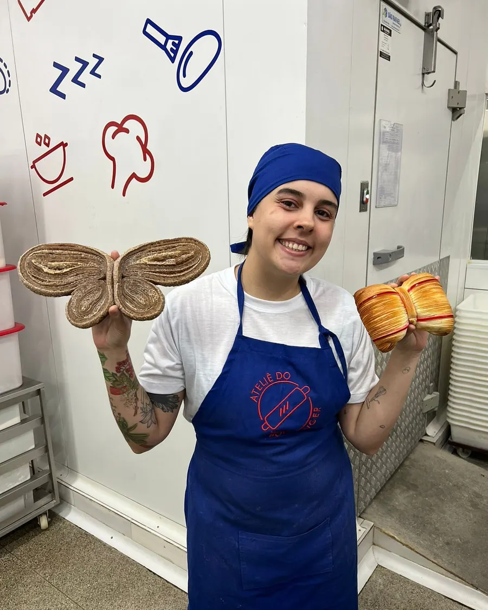

Frente principal
Consultoria de cozinha para restaurantes e cafeterias
Crio e ajusto receitas de pão e confeitaria para o seu cardápio. Testo na sua cozinha, com os seus fornos, e escrevo tudo de um jeito que a equipe consiga repetir amanhã sem mim.
- Criação e adaptação de pães, folhados, sobremesas e confeitaria
- Receitas escritas, com gramaturas e passo a passo
- Testes e ajustes na sua cozinha, com os seus equipamentos
- Orientação sobre técnica, textura, ponto e acabamento